class: center, middle # Getting started with <img class="dvt-logo" src="assets/img/dvt-logo.png" alt="DVT Logo"> <img src="assets/img/angular-3.svg" style="width: 100%" alt="Angular Logo"> ### Workshop --- # Prerequisites <img class="dvt-logo" src="assets/img/dvt-logo.png" alt="DVT Logo"> - Some knowledge of: - HTML - CSS - JavaScript <img style="width: 100%" src="assets/img/HTML5_CSS_JavaScript.png" alt="HTML 5, CSS and JS Logo"> --- # The quest for rich 💰 UX <img class="dvt-logo" src="assets/img/dvt-logo.png" alt="DVT Logo"> - **Not so rich UX** 👎: - Click-Wait-and-Refresh-Cycle in traditional Multi-Page Web applications. - **Rich UX** 👍: - Absence of Click-Wait-and-Refresh-Cycle. - Retrieve and present data from the server without a whole page refresh. - How was this done in the good ol' days? - **Ajax**: - Techniques using javascript on the client side to create asynchronous web applications. - Data is sent and retrieved from the server asynchronously without interfering with the display and behavior of the existing page. - How is this done in the good current days? - Still Ajax...but that doesn't give us excessively rich UX. - For that...we use **Single Page Applications**(SPA). --- # Single Page Applications <img class="dvt-logo" src="assets/img/dvt-logo.png" alt="DVT Logo"> - Dynamically re-render their content by requesting partial content from the server. - Index page is retrieved one with the initial request. - No page reloads. - Data(not HTML) is exchanged between the client and the server. 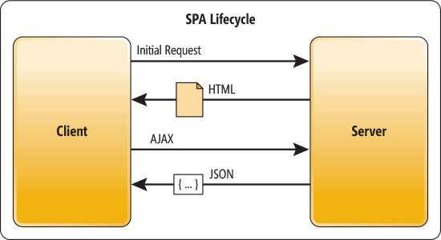 --- # Multi Page Applications <img class="dvt-logo" src="assets/img/dvt-logo.png" alt="DVT Logo"> - No dynamic content re-rendering - HTML pages are fetched on every request. - Burdened with page reloads. 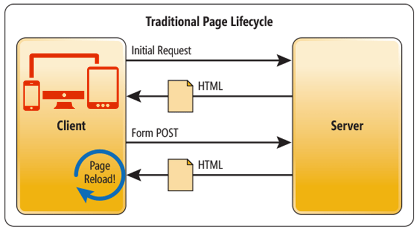 --- # SPA and MPA showdown <img class="dvt-logo" src="assets/img/dvt-logo.png" alt="DVT Logo"> 1. Search Engine Optimization: - Easier on MPA, search engines can crawl these quite easily. - Not so easy on a SPA...although there are tools for this. 2. Browser Support: - SPA work well on modern browsers...older browser them polyfills. - It's easier to develop MPAs for older browsers without polyfills. 3. Speeeed: - Single Page Applications: - Use less resources. - Multi Page Applications: - Resource hungry...resources are often fetched on every request. --- # SPA Libraries and Frameworks <img class="dvt-logo" src="assets/img/dvt-logo.png" alt="DVT Logo"> <img src="assets/img/js-frameworks.jpg" alt="SPA Frameworks"> <h2 style="text-align: center">We'll have a look at Angular</h2> --- # What is Angular <img class="dvt-logo" src="assets/img/dvt-logo.png" alt="DVT Logo"> - An opinionated JS framework for building client side applications. - Suggests how things should be done. - Maintained by the good lads at Google. - Built with TypeScript. - Tools included: - A router. - A forms module. - An HttpClient and many more tools. <img style="position: absolute; left: 35%" src="assets/img/angular.png" alt="Angular logo"> --- # Building Blocks <img class="dvt-logo" src="assets/img/dvt-logo.png" alt="DVT Logo"> - Components - Data Binding - Directives - Pipes - Modules - Services - Dependency Injection <img src="assets/img/blocks.png" style="width: 80%" alt="Lego Blocks"> --- # Tools ecosystem <img class="dvt-logo" src="assets/img/dvt-logo.png" alt="DVT Logo"> #### Some tools that aid in Angular application development - [Angular CLI](https://cli.angular.io/) - A command line tool that helps create and manage angular apps. - [Angular Universal](https://angular.io/guide/universal) - Angular's take on server-side-rendering. - [Angular Console](https://angularconsole.com/) - A GUI alternative for Angular CLI. - [Angular Material](https://material.angular.io/) - Material Design components for Angular. <img src="assets/img/tools.jpg" style=" position: absolute; left: 20%; width: 55%" alt="Tools"> --- # Angular CLI :: Brief Look <img class="dvt-logo" src="assets/img/dvt-logo.png" alt="DVT Logo"> - An overview of what the tool is capable of: - ```bash ng help ``` 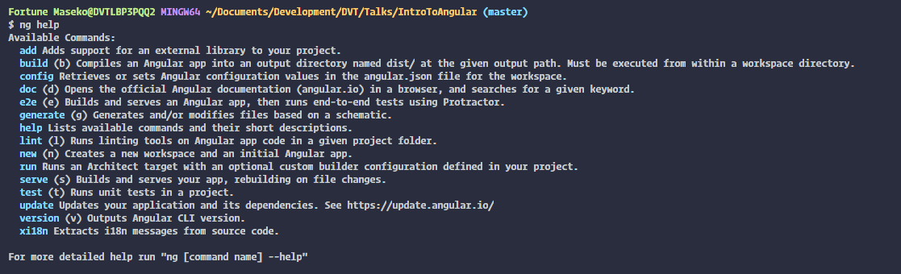 --- # Angular CLI :: `ng new` Crash Course <img class="dvt-logo" src="assets/img/dvt-logo.png" alt="DVT Logo"> - Used when creating a new project 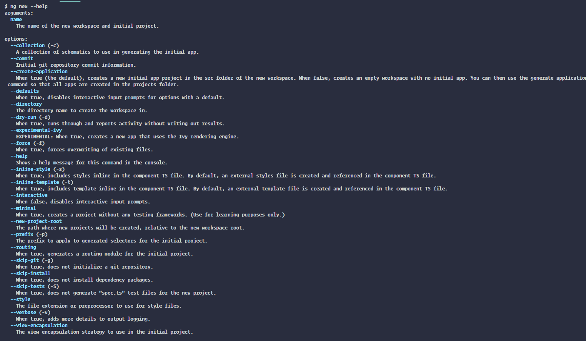 --- # Our first app <img class="dvt-logo" src="assets/img/dvt-logo.png" alt="DVT Logo"> - Prerequisites: - Node.JS - A text editor - Angular CLI: - A small tool that helps create and manage angular projects. - Installing the Angular CLI: ```bash npm install -g @angular/cli ``` - Creating a new app: ```bash ng new awesome-app --skip-tests ``` - Running our new app: ```bash cd awesome-app ng serve --open ``` OR ```bash cd awesome-app npm start ``` --- # Components <img class="dvt-logo" src="assets/img/dvt-logo.png" alt="DVT Logo"> - Building blocks for Angular apps. - Encapsulate HTML templates, data and logic that can be arranged together to build an appliation. - Component Architecture: 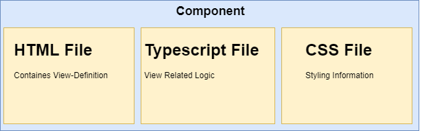 - Angular also supports Single-File-Components. - Styles, view definition and view related logic are in one file. --- # Components :: Deep Dive <img class="dvt-logo" src="assets/img/dvt-logo.png" alt="DVT Logo"> - Component files overview - Creating a new Component - Component Lifecycle - Communiaction between Components - Inputs - Outputs - Interpolation: - In tags. - In attributes --- # Components :: Deep Dive <img class="dvt-logo" src="assets/img/dvt-logo.png" alt="DVT Logo"> ### Component files overview - **Typescript file** - houses Component Logic 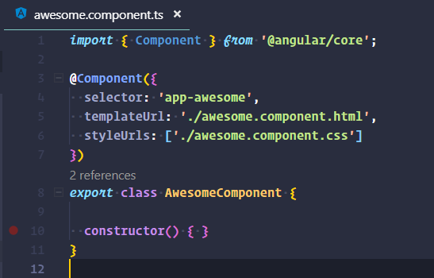 --- # Components :: Deep Dive <img class="dvt-logo" src="assets/img/dvt-logo.png" alt="DVT Logo"> ### Component files overview - **Html file** - houses Component markup - Supports data-binding and other concepts unique to angular - Can only be properly interpreted by Angular 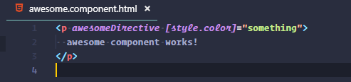 --- # Components :: Deep Dive <img class="dvt-logo" src="assets/img/dvt-logo.png" alt="DVT Logo"> ### Component files overview - **Stylesheet** - houses css styles - Component styles are scoped only to the component - Can also use pre-processed stylesheets - override component schematic in angular.json - specify `--style` flag when creating a new app 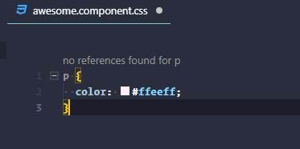 --- # Components :: Deep Dive <img class="dvt-logo" src="assets/img/dvt-logo.png" alt="DVT Logo"> ### Component files overview - Single File Components - **View**, **Styles** and **Logic** are in one file. 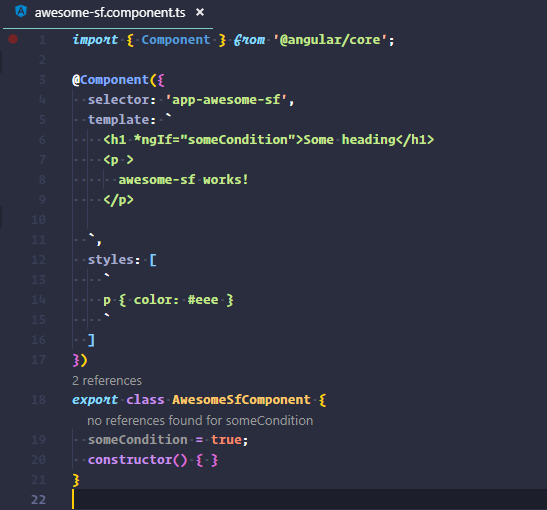 --- # Components :: Deep Dive <img class="dvt-logo" src="assets/img/dvt-logo.png" alt="DVT Logo"> ### Creating a new Component - Use Angular CLI - Create a Typeahead component ```bash ng generate component custom-typeahead ``` OR ```bash ng g c custom-typeahead ``` 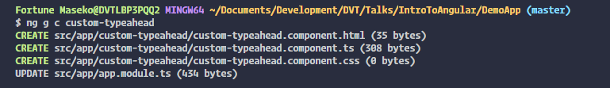 --- # Components :: Deep Dive <img class="dvt-logo" src="assets/img/dvt-logo.png" alt="DVT Logo"> ### Typeahead Component - Defining the template - `custom-typeahead.component.html` ```html <h1>Custom Typeahead</h1> <input type="text" list="browsers"> <datalist id="browsers"> <option value="Firefox"> <option value="IE"> <option value="Chrome"> <option value="Opera"> <option value="Safari"> </datalist> ``` --- # Components :: Deep Dive <img class="dvt-logo" src="assets/img/dvt-logo.png" alt="DVT Logo"> ### Typeahead Component - Defining the stylesheet - `custom-typeahead.component.css` ```css :host { width: 25%; align-self: center; } input:focus { background-color: #fff; } input::-webkit-calendar-picker-indicator { display: none; } input { background-color: #f1f5f8; border: 1px solid #dae1e7; border-radius: .25rem; line-height: 1.5; outline: none; padding: .5rem .8rem; transition: all .1s ease-in; } ``` --- # Components :: Deep Dive <img class="dvt-logo" src="assets/img/dvt-logo.png" alt="DVT Logo"> ### Typeahead Component - App Component changes - `app.component.html` ```html <app-custom-typeahead></app-custom-typeahead> ``` - `app.component.css` ```css @import url('https://fonts.googleapis.com/css?family=Lato'); :host { display: flex; flex-flow: column; text-align: center; font-family: 'Lato', sans-serif; } ``` --- # Components :: Deep Dive <img class="dvt-logo" src="assets/img/dvt-logo.png" alt="DVT Logo"> ### Typeahead Component - Result 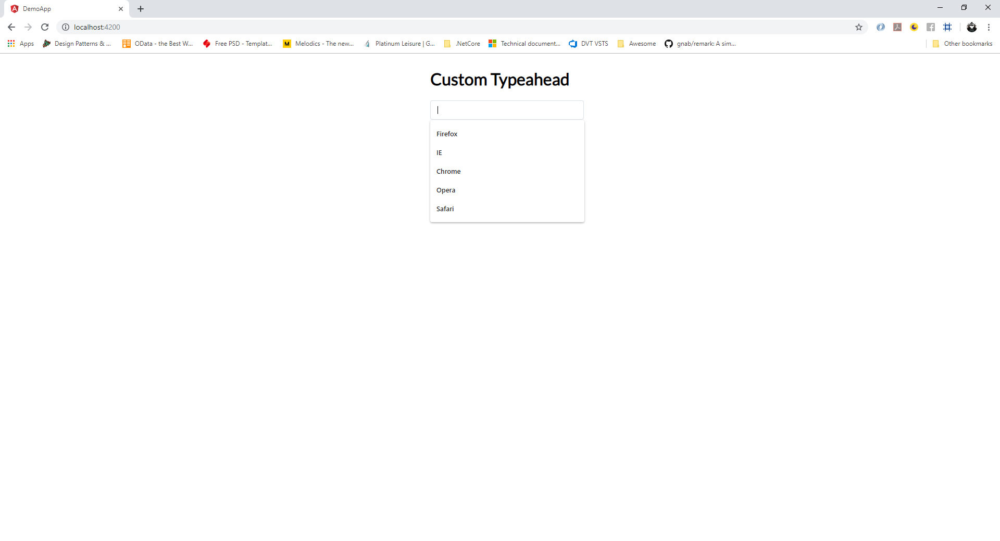 --- # Components :: Deep Dive <img class="dvt-logo" src="assets/img/dvt-logo.png" alt="DVT Logo"> ### Component Lifecycle Overview - Component instances have a lifecycle as Angular creates, updates, and destroys them. - Developers can tap into key moments in that lifecycle by implementing lifecycle hooks. - Lifeyle hooks: - `ngOnChanges()` - `ngOnInit()` - `ngDoCheck()` - `ngAfterContentInit()` - `ngAfterContentChecked()` - `ngAfterViewInit()` - `ngOnDestroy()` 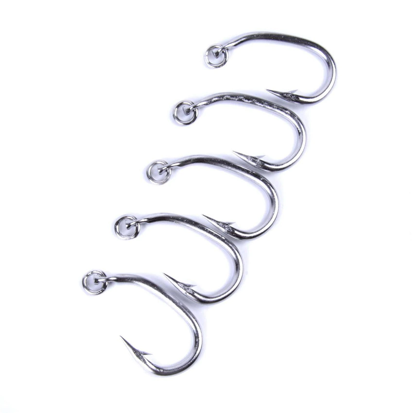 --- # Components :: Deep Dive <img class="dvt-logo" src="assets/img/dvt-logo.png" alt="DVT Logo"> ### Data Binding - Coordinate communication between a component class and its view layer. - Types of Data Binding: - Interpolation - Event binding - Property binding - 2-Way data binding --- # Components :: Deep Dive <img class="dvt-logo" src="assets/img/dvt-logo.png" alt="DTV Logo"> ### Data Binding :: Interpolation - Used to take expressions and change them into text that can be used within HTML element tags and attributes. - aka 1-Way data binding. - Syntax: `{{ expression }}` - Applied in HTML elements or attributes. - Assuming we have a property called `personName` with the value `'Big Shaq'` ```html <p>Name: {{ personName }}</p> <!-- Result --> Name: Big Shaq ``` - We can also work with expressions! ```html <p>2 + 2 is {{ 2 + 2 }}, minus 1 that's {{ (2 + 2) - 1 }} quick maths!</p> <!-- Result --> 2 + 2 is 4, minus 1 that's 3 quick maths! ``` --- # Components :: Deep Dive <img class="dvt-logo" src="assets/img/dvt-logo.png" alt="DVT Logo"> ### Data Binding :: Event Binding - Used to listen for events caused by user actions in a component's view. - Syntax: `(click)="eventHandler()"` ```html <!--HTML--> <button (click)="doSomething()">Do Something</button> <!--Typescript--> doSomething(): void { ... } ``` --- # Components :: Deep Dive <img class="dvt-logo" src="assets/img/dvt-logo.png" alt="DVT Logo"> ### Data Binding :: Property binding - Allows setting HTML attribute values on HTML elements. ```html <input type="submit" [value]="someValue"> <img [src]="someImageSource" [alt]="someAlt"> ``` --- # Components :: Deep Dive <img class="dvt-logo" src="assets/img/dvt-logo.png" alt="DVT Logo"> ### Data Binding :: 2-Way Data Binding - Used for 2-Way communication between the component's logic and presentation layer. - e.g element in the view can `set` and `retrieve` its value from a component class. - Requires the `ngModel` directive from the `FormsModule` package/type definition. - Syntax: `[(ngModel)]="someVariable"` ```html <!-- HTML --> <input type="text" placeholder="ngModelDemo" [(ngModel)]="demoText"> <p>{{ demoText }}</p> <!-- Typescript --> export class DemoComponent { demoText: string; } ``` --- # Components :: Deep Dive <img class="dvt-logo" src="assets/img/dvt-logo.png" alt="DVT Logo"> ### Communiaction between components --- # Directives <img class="dvt-logo" src="assets/img/dvt-logo.png" alt="DVT Logo"> - Content --- # Pipes <img class="dvt-logo" src="assets/img/dvt-logo.png" alt="DVT Logo"> - Content --- # Modules <img class="dvt-logo" src="assets/img/dvt-logo.png" alt="DVT Logo"> - Content --- # Services <img class="dvt-logo" src="assets/img/dvt-logo.png" alt="DVT Logo"> - Content --- # Dependency Injection <img class="dvt-logo" src="assets/img/dvt-logo.png" alt="DVT Logo"> - Content --- # Lab Time <img class="dvt-logo" src="assets/img/dvt-logo.png" alt="DVT Logo"> <h1 style="position: absolute; top: 45%; left: 25%;">Real World-ish application!</h1> ---